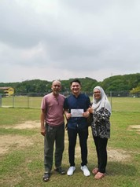
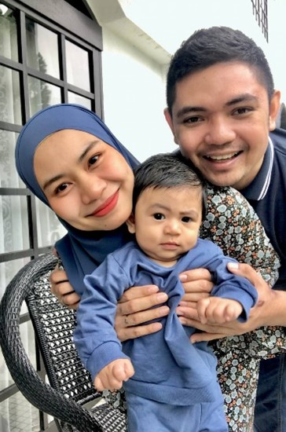
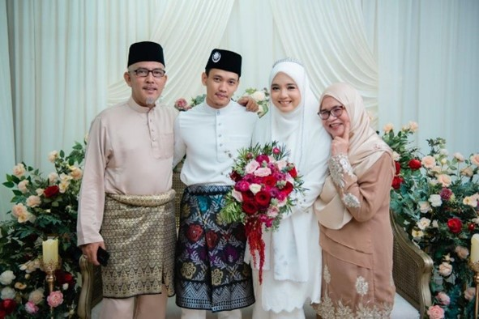
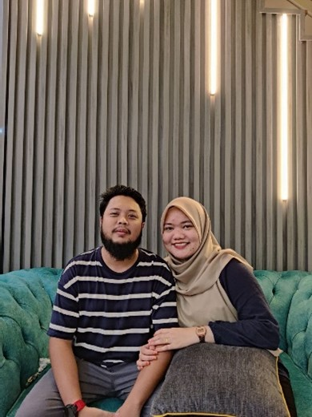
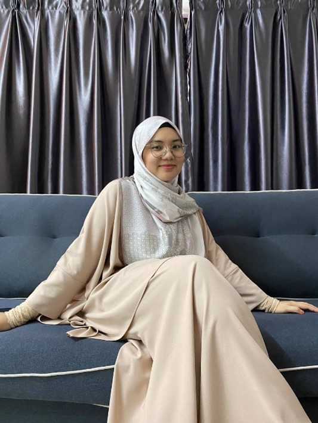

CONTACTS
+60 11-33397392
ikramshamlan111@gmail.com

PARENTS |
First and foremost, this is a picture of my beloved parents. My father is 56 years old, and his name is Mohd Shamlan bin Mohd Tajuddin. My father has a fierce look but he is very pleasant when he meets new people and can be welcomed to chat for longer than anyone expected due to his welcoming attitude. Then, there's my one and only mother, Nizar binti Noordin. There are no words to express who she is. My mother is god's most precious gift to me, and she is my heaven. My mother is the source of my happiness in my life. Without my mother, there would be no Muhammad Ikram bin Mohd Shamlan in this entire world. |

OLDER BROTHER |
My older brother's name is Muhammad Ikmal Bin Mohd Shamlan, and he is 29 years old. My brother is married, and his wife and children's names are Nurul Najwa and Muhammad Iyad Naufal. He was employed by Fujifilm in Selangor. I grew up with my brother, and he is the one who taught me how to be a good little brother, among other things. My brother's interests and activities have been passed on to me directly or indirectly. |

FIRST SISTER |
Munirah binti Mohd Shamlan is my first sister's name. She is 28 years old, married to Muhammad Aizat bin Shawal, and has a son named Muhammad Umar. She is employed at Intel in Kulim, Kedah. My sister scolds me frequently for my own benefit and provides me with what I require so that his little brother can live his life as wishes. |

SECOND SISTER |
Nabilah binti mohd shamlan is my second sister's name. She is 26 years old and has a husband named Muhammad Aliman. She works as an administrator at the Ajwa Clinic in Shah Alam. My sister is incredibly dedicated to her career and also quite disciplined in her daily life. |

YOUNGEST SISTER |
My youngest sister's name is Syamilah binti Mohd Shamlan. She is 24 years old and still unmarried. My sister is highly conscientious about housework and she enjoys cooking. Her hobbies include cooking and watching Netflix. |